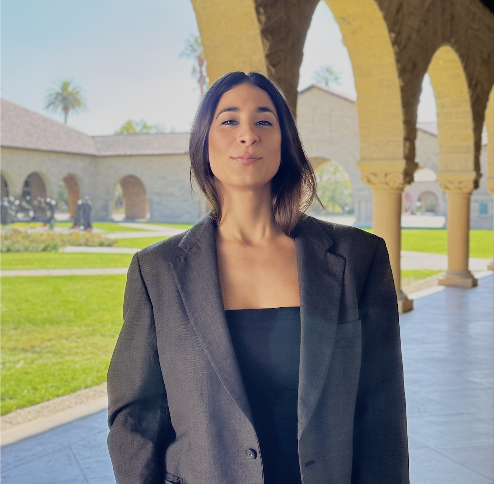

Juana
Perfecta
Visual Artist — Brenda Cisnero

Biomaterials
AI Generative
Organic Matrices · AI · Video

Textures Becomes Structure
Técnica Mixta · 2022 / 2023

Platasí
Mixed media · 2023 / 2024
These images document biomaterial matrices created by hand and scanned during different stages of their transformation.


Trained on these biomaterial matrices, the model translates their visual vocabulary into motion.
Textures Becomes Structure
In Texturas de la Estructura, form does not resolve, it registers. Each piece holds the trace of a process that cannot be fully contained, where matter becomes the site of tension between what is felt and what resists being named.
Texture operates as structure. Surfaces are built through layers that compress, erode, or endure, carrying different degrees of resistance, fragility, and permanence. What emerges is not an image, but a field where material and emotion negotiate their presence.
Each work unfolds as a fragment of an underlying continuity. Not as a narrative that can be read, but as something that accumulates, shifts, and reappears in different states. What changes is not only the surface, but the way it holds what has passed through it.
Across the series, the work moves between density and release, between what remains and what dissolves. The gesture insists, the material responds, and somewhere in between, a language forms that does not explain, but persists.
En Texturas de la Estructura, la forma no resuelve, registra. Cada pieza sostiene la huella de un proceso que no puede ser plenamente contenido, donde la materia se convierte en el sitio de tensión entre lo que se siente y lo que resiste ser nombrado.
La textura opera como estructura. Las superficies se construyen a través de capas que comprimen, erosionan o perduran, portando diferentes grados de resistencia, fragilidad y permanencia. Lo que emerge no es una imagen, sino un campo donde material y emoción negocian su presencia.
Cada obra se despliega como un fragmento de una continuidad subyacente. No como una narrativa que puede leerse, sino como algo que se acumula, desplaza y reaparece en diferentes estados. Lo que cambia no es solo la superficie, sino la manera en que sostiene lo que ha pasado a través de ella.
A lo largo de la serie, la obra se mueve entre densidad y liberación, entre lo que permanece y lo que se disuelve. El gesto insiste, el material responde, y en algún punto intermedio se forma un lenguaje que no explica, sino que persiste.

PussyRose
Mixed media · Acrylic
AÑO: 2023
TÉCNICA: MIXTA SOBRE LIENZO
MEDIDAS: 60 x 140 cm
Baba Roja
Mixed media · Acrylic
AÑO: 2023
TÉCNICA: MIXTA SOBRE LIENZO
MEDIDAS: 170 x 100 cm

Fueguitos
Mixed media · Acrylic
AÑO: 2023
TÉCNICA: MIXTA SOBRE LIENZO
MEDIDAS: 200 x 120 cm

Grow
Mixed media · Acrylic
AÑO: 2023
TÉCNICA: MIXTA SOBRE LIENZO
MEDIDAS: 100 x 70 cm

Baba
Mixed media · Acrylic
AÑO: 2023
TÉCNICA: MIXTA SOBRE LIENZO
MEDIDAS: 170 x 100 cm

Apaciguamiento en calle Vidal
Mixed media · Acrylic
AÑO: 2023
TÉCNICA: MIXTA SOBRE LIENZO
MEDIDAS: 120 x 84 cm

IDecided
Mixed media · Acrylic
AÑO: 2024
TÉCNICA: MIXTA SOBRE LIENZO
MEDIDAS: 100 x 70 cm

Mashrooms
Mixed media · Acrylic
AÑO: 2023
TÉCNICA: MIXTA SOBRE LIENZO
MEDIDAS: 180 x 180 cm

Cientotrece 113
Mixed media · Acrylic
AÑO: 2023
TÉCNICA: MIXTA SOBRE LIENZO
MEDIDAS: 140 x 110 cm
.png)
Oro
Mixed media · Acrylic
AÑO: 2023
TÉCNICA: MIXTA SOBRE LIENZO
MEDIDAS: 200 x 120 cm
Plata Sí
In Plata Sí, form returns as an insistent gesture, never identical. Each iteration subtly shifts its meaning, as if the image resists fixation and requires rearticulation across surfaces.
The banana, and its mutations, operate as an available body: a site where tensions between desire, value, and exposure are inscribed. What initially appears as a recognizable image quickly slips into something else. There is always something that holds, and something that yields, opens, or deforms.
The painting oscillates between technical control and a certain rawness in its subject matter. Within that friction, a quiet but persistent unease emerges. The polished does not suppress the visceral; it amplifies it. The surface does not conceal, but intensifies.
Throughout the series, the image accumulates states: radiance, fracture, decay, excess, containment. Not as fixed categories, but as layers that overlap and seep into one another. Each work holds a moment, while also revealing what precedes it and what propels it forward.
What circulates is not only form, but a transforming energy. Between repetition and variation, the series constructs a field where the intimate and the visible are continuously negotiated, never fully resolved.
En Plata Sí, la forma regresa como un gesto insistente, nunca idéntico. Cada iteración desplaza sutilmente su sentido, como si la imagen resistiera la fijación y requiriera ser rearticulada a través de las superficies.
La banana, y sus mutaciones, operan como un cuerpo disponible: un sitio donde se inscriben tensiones entre deseo, valor y exposición. Lo que inicialmente parece una imagen reconocible rápidamente se desliza hacia otra cosa. Siempre hay algo que sostiene, y algo que cede, se abre o se deforma.
La pintura oscila entre el control técnico y cierta crudeza en su temática. En esa fricción emerge una inquietud callada pero persistente. Lo pulido no suprime lo visceral; lo amplifica. La superficie no oculta, sino que intensifica.
A lo largo de la serie, la imagen acumula estados: resplandor, fractura, deterioro, exceso, contención. No como categorías fijas, sino como capas que se superponen y se filtran unas en otras. Cada obra sostiene un momento, al tiempo que revela lo que la precede y lo que la impulsa hacia adelante.
Lo que circula no es solo forma, sino una energía en transformación. Entre repetición y variación, la serie construye un campo donde lo íntimo y lo visible se negocian continuamente, sin resolverse del todo.

Plátano I
Surface as threshold
AÑO: 2023
TÉCNICA: MIXTA SOBRE LIENZO
MEDIDAS: 100 x 70 cm
The surface seduces, but it is not enough. Something breaks outside any organic logic, revealing an interior that unsettles the idea of value. What is attractive persists, even as it begins to collapse.

Plátano II
Immediate celebration
AÑO: 2023
TÉCNICA: MIXTA SOBRE LIENZO
MEDIDAS: 60 x 50 cm
The image surrenders to the brightness of the moment. Everything expands toward enjoyment, yet its own condition suggests fragility. What radiates does not seek to last, only to intensify before fading.

Plátano III
A rehearsal of care
AÑO: 2024
TÉCNICA: ÓLEO SOBRE TELA
MEDIDAS: 60 x 60 cm
A structure emerges in an attempt to organize. The form seeks support from something external, as if it needed guidance to sustain itself. There is a forced tenderness, a balance that has not yet become internal.

Plátano IV
Force as structure
AÑO: 2024
TÉCNICA: ÓLEO SOBRE TELA
MEDIDAS: 60 x 60 cm
Containment becomes more rigid. The form asserts itself through pressure, leaving a trace behind. It is no longer about care, but direction, a force that organizes while simultaneously constraining.

Plátano V
Desire without restraint
AÑO: 2024
TÉCNICA: MIXTA SOBRE LIENZO
MEDIDAS: 60 x 60 cm
The image opens into a logic of excess. Everything becomes available, visible, exchangeable. Pleasure unfolds without mediation, within a space where intensity blurs the line between desire and consumption.

Plátano VI
Style as assertion
AÑO: 2024
TÉCNICA: MIXTA SOBRE LIENZO
MEDIDAS: 100 x 80 cm
The form becomes a statement. What once remained implicit now appears with clarity and speed. There is a will to reveal without hesitation, where the process itself becomes surface.

Plátano VII
Persistence in decline
AÑO: 2024
TÉCNICA: MIXTA SOBRE LIENZO
MEDIDAS: 80 x 60 cm
The image moves through its own deterioration. What remains is not absence, but another form of presence. Between abandonment and residual shine, the material continues to speak, even when it no longer conforms.

Plátano VIII
The elegance of excess
AÑO: 2024
TÉCNICA: MIXTA SOBRE LIENZO
MEDIDAS: 100 x 90 cm
The form reaches an unstable synthesis. Provocation and control, beauty and solitude coexist. What is presented does not resolve, it remains suspended in its own intensity.
I work from texture as record: of what has been touched, compressed, exposed, and altered. What first drew me to texture was precisely what it resists: control. The surface never fully obeys intention. It bends, accumulates, erodes, and reorganizes itself beyond prediction. Across different bodies of work, I return to the same question: what does matter retain, and what does it relinquish?
My works operate as material analogies for lived stages and survival. Not narrated directly, but built through layers, pressure, density, fracture, and exposure.
In plataSÍ, I approached surface through hyperrealist precision, using technical control to heighten tensions around desire, vulnerability, and display. In Texturas de la Estructura, the image began to dissolve into accumulation, gesture, erosion, and repetition. Texture stopped functioning as detail and became the structure of the work itself.
That path arrives at its current form in Textures of Becoming. Working with biodegradable and plant-based materials, I collect, observe, scan, and transform organic matrices as they mutate over time. These materials move across physical and generative states: preserved as matter, translated into archival prints, and extended into AI-generated video.
The AI system is not used to reproduce images or illustrate ideas. I trained a custom semantic model on the scanned materials themselves, linking interior states and emotional vocabularies to specific visual behaviors within the matter. When generating, I work through condition rather than instruction, allowing the system to interpret, drift, and misread.
Across all three series, the work remains centered on the same inquiry: how surfaces register memory, tension, transformation, and persistence.
Trabajo a partir de la textura como registro: de lo que ha sido tocado, comprimido, expuesto y alterado. Lo que primero me atrajo de la textura fue precisamente lo que resiste: el control. La superficie nunca obedece completamente la intención. Se dobla, acumula, erosiona y se reorganiza más allá de la predicción. A través de diferentes cuerpos de trabajo, regreso a la misma pregunta: ¿qué retiene la materia y qué renuncia?
Mis obras operan como analogías materiales de etapas vividas y supervivencia. No narradas directamente, sino construidas a través de capas, presión, densidad, fractura y exposición.
En plataSÍ, abordé la superficie a través de la precisión hiperrealista, usando control técnico para intensificar tensiones en torno al deseo, la vulnerabilidad y la exhibición. En Texturas de la Estructura, la imagen comenzó a disolverse en acumulación, gesto, erosión y repetición. La textura dejó de funcionar como detalle y se convirtió en la estructura de la obra misma.
Ese camino llega a su forma actual en Texturas del Devenir. Trabajando con materiales biodegradables y de origen vegetal, recopilo, observo, escaneo y transformo matrices orgánicas mientras mutan con el tiempo. Estos materiales se mueven a través de estados físicos y generativos: preservados como materia, traducidos en impresiones de archivo y extendidos en video generado por IA.
El sistema de IA no se usa para reproducir imágenes o ilustrar ideas. Entrené un modelo semántico personalizado en los propios materiales escaneados, vinculando estados interiores y vocabularios emocionales a comportamientos visuales específicos dentro de la materia. Al generar, trabajo a través de la condición en lugar de la instrucción, permitiendo que el sistema interprete, derive y malinterprete.
A través de las tres series, el trabajo se centra en la misma investigación: cómo las superficies registran memoria, tensión, transformación y persistencia.
Sobre Mí
Juana Perfecta is the artistic name of Brenda Cisnero, a visual artist born in Villa Gesell, Buenos Aires, Argentina. She holds a Bachelor of Fine Arts and a Bachelor of Arts in Visual Arts Education, and is a Stanford Ignite alumni (GSB). She lives and works in the San Francisco Bay Area, California.
Her practice centers on texture as language, the surface understood as an archive of memory, pressure, and time. Working across hyperrealism, abstraction, and biodegradable materials, she studies how matter behaves under different conditions: how it erodes, holds, mutates, and persists. A custom AI semantic system she trains on interior states rather than formal descriptors extends this inquiry into the digital realm, generating images and videos from a learned vocabulary of lived experience.
Textures of Becoming was first presented at Stanford and has since circulated through exhibitions and interdisciplinary art spaces across California.
Juana Perfecta es el nombre artístico de Brenda Cisnero, artista visual nacida en Villa Gesell, Buenos Aires, Argentina. Posee una Licenciatura en Bellas Artes y una Licenciatura en Artes Visuales con orientación en Educación Artística, y es alumni de Stanford Ignite (GSB). Vive y trabaja en el área de la Bahía de San Francisco, California.
Su práctica se centra en la textura como lenguaje, la superficie entendida como un archivo de memoria, presión y tiempo. Trabajando a través del hiperrealismo, la abstracción y materiales biodegradables, estudia cómo se comporta la materia bajo diferentes condiciones: cómo se erosiona, sostiene, muta y persiste. Un sistema semántico de IA personalizado que entrena en estados interiores en lugar de descriptores formales extiende esta investigación al ámbito digital, generando imágenes y videos a partir de un vocabulario aprendido de experiencia vivida.
Texturas del Devenir fue presentado por primera vez en Stanford y desde entonces ha circulado a través de exposiciones y espacios de arte interdisciplinarios en toda California.
